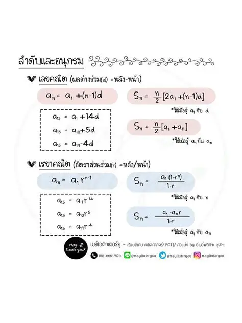

ลำดับและอนุกรม

ลำดับและอนุกรมเป็นเนื้อหาสำคัญทางคณิตศาสตร์ที่เกี่ยวข้องกับการเรียงจำนวนตามรูปแบบหรือกฎที่กำหนด โดยลำดับ คือ การนำจำนวนมาเรียงต่อกันเป็นพจน์ เช่น 2, 4, 6, 8 ซึ่งมีรูปแบบเพิ่มขึ้นทีละ 2 ส่วนอนุกรม คือ ผลบวกของพจน์ต่าง ๆ ในลำดับ เช่น 2 + 4 + 6 + 8 ลำดับสามารถแบ่งได้หลายประเภท โดยประเภทที่สำคัญ ได้แก่ ลำดับเลขคณิตและลำดับเรขาคณิต ลำดับเลขคณิตมีผลต่างระหว่างพจน์ที่อยู่ติดกันคงที่ ส่วนลำดับเรขาคณิตมีอัตราส่วนระหว่างพจน์ที่อยู่ติดกันคงที่ การศึกษาลำดับและอนุกรมช่วยให้สามารถหาพจน์ทั่วไป หาพจน์ที่ต้องการ และหาผลบวกของอนุกรมได้ นอกจากนี้ยังสามารถนำไปประยุกต์ใช้กับสถานการณ์ต่าง ๆ ในชีวิตประจำวัน เช่น การคำนวณเงินออม การผ่อนชำระ และการเพิ่มขึ้นของปริมาณต่าง ๆ